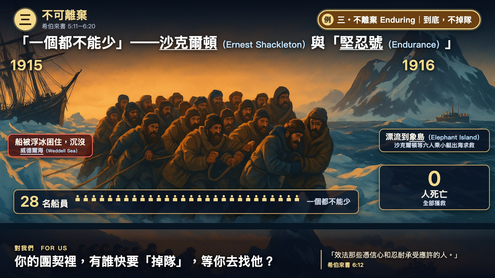

← 世界觀察 World Watch
希伯來書三．不可離棄 (Heb 5:11–6:20) 的生活例證
堅忍號
Endurance
案例說明 Case description
「一個都不能少」——沙克爾頓（Ernest Shackleton）與「堅忍號（Endurance）」（1914–1916）
1914 年，英國探險家沙克爾頓（Ernest Shackleton）率「堅忍號（Endurance）」出發，準備橫越南極洲（Antarctica）。1915 年船被浮冰困住，在威德爾海（Weddell Sea）沉沒。二十八名船員漂流到象島（Elephant Island），沙克爾頓等六人乘小艇出海求救。1916 年，全部獲救，無人死亡。
他們沒有因為船沉了就散夥。信心不是一時的衝勁，而是一天一天不離隊。來 6:12：「效法那些憑信心和忍耐承受應許的人。」你的團契裡，有誰快要「掉隊」，等你去找他？
資訊圖 Infographic

講道短片 Sermon clip (used during the sermon)
精選短版 Core cut（講道時用）
堅忍號：困冰、破冰、合力鋸冰（Endurance: trapped, breaking free, sawing together）
長度 Length：12.7 秒 / 12.7 s · 旁白＋中英字幕 narration + bilingual captions
來源 Source：法蘭克·赫爾利 (Frank Hurley) · 日期 Date：1919年紀錄片《南極》（拍攝於1914–1916年） (film "South", 1919 (shot 1914–1916))
出處 Credit：經 Internet Archive 取得 (via the Internet Archive) · 授權 Licence：美國公有領域；默片 (public domain (US); silent)
電影完整片段 Full clip(s) (used in the sermon movie)
完整片段 Full clip 1/3（電影版）
堅忍號被浮冰困住（Endurance held fast in the pack ice）
長度 Length：20.0 秒 / 20.0 s · 靜音 silent
來源 Source：法蘭克·赫爾利 (Frank Hurley) · 日期 Date：1919年紀錄片《南極》（拍攝於1914–1916年） (film "South", 1919 (shot 1914–1916))
出處 Credit：經 Internet Archive 取得 (via the Internet Archive) · 授權 Licence：美國公有領域；默片 (public domain (US); silent)
完整片段 Full clip 2/3（電影版）
船員在船頭破冰（Crew at the bow, breaking the ice）
長度 Length：13.0 秒 / 13.0 s · 靜音 silent
來源 Source：法蘭克·赫爾利 (Frank Hurley) · 日期 Date：1919年紀錄片《南極》（拍攝於1914–1916年） (film "South", 1919 (shot 1914–1916))
出處 Credit：經 Internet Archive 取得 (via the Internet Archive) · 授權 Licence：美國公有領域；默片 (public domain (US); silent)
完整片段 Full clip 3/3（電影版）
船員合力鋸冰（The crew cutting through the ice together）
長度 Length：20.0 秒 / 20.0 s · 靜音 silent
來源 Source：法蘭克·赫爾利 (Frank Hurley) · 日期 Date：1919年紀錄片《南極》（拍攝於1914–1916年） (film "South", 1919 (shot 1914–1916))
出處 Credit：經 Internet Archive 取得 (via the Internet Archive) · 授權 Licence：美國公有領域；默片 (public domain (US); silent)
來源與延伸閱讀 Source & further reading
講章段落 Sermon passage：希伯來書 5:11–6:20 · 完整講道包 Full sermon package：希伯來書講道包